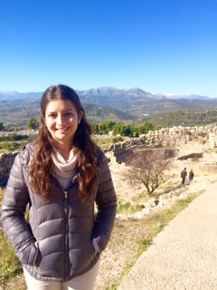

About Gabriela
Education
I am a rising junior studying Industrial and Systems Engineering at the University of Florida. I have a strong inclination toward Computer Engineering and programming and I love anything that address optimization and process improvement. I hope to graudate in the spring of 2018 and continue my studies as a masters or phD student.
Personal
I was born in Colombia, but I grew up all over the United States. I love traveling and learning about new culutres. I'm a food enthusiast, avid reader and amateur soccer player, scuba diver, and runner.
Contact Information
E-mail: gburaglia@ufl.edu
Linkedin Profile: linkedin.com/in/gburaglia
© Gabriela Buraglia. All rights reserved.
Design by TEMPLATED.